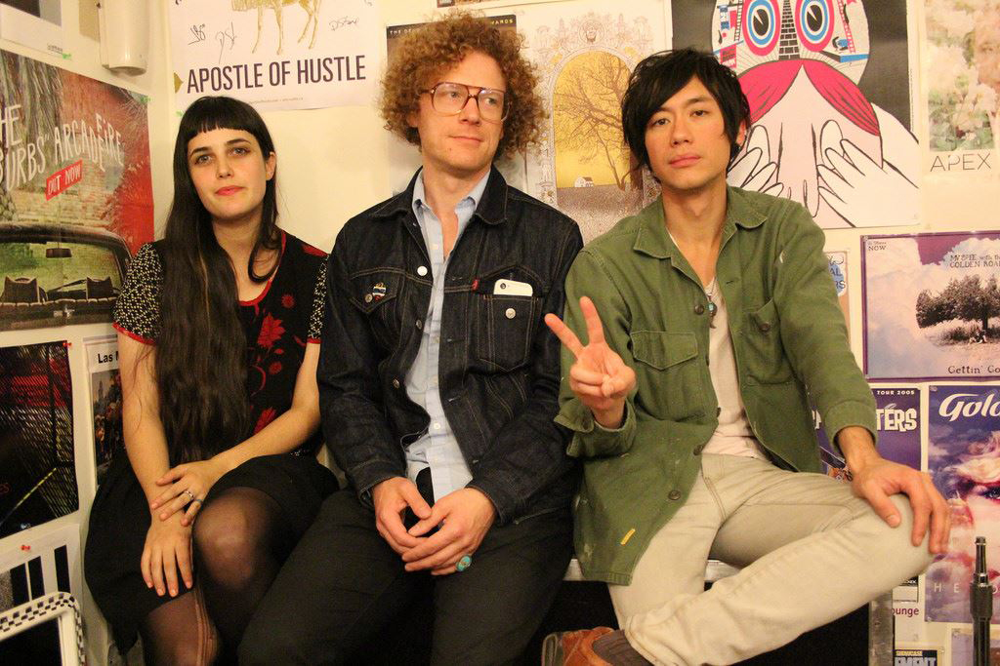

WL
photo by Jason Quigley
WL is a three piece exploratory rock band from Portland, OR. Misty Mary sings, plays keyboards and plays bass, Stevie Nistor plays drums and keyboards, and Michael Yun plays keyboards and guitar. They have been playing together since 2012.
The band’s first single ‘Impermanent’ b/w ‘No Escape‘ was released in the summer of 2012. It was recorded on a 1/4″ Tascam 388 and released as a limited edition 7″. Impermanent is a meditation on the consequences of existing in a prolonged state of imbalance. No Escape was written during a sensory deprivation session, part of a series of sessions for which the band had traded an ambient piece. These visceral, yearning songs provided the band with an anchor to which they have tethered their shape shifting explorations.
Their first full length record ‘Hold’ expanded on the seed set by the Impermanent single. Hold’s fraying, distorted guitar and thunderous, driving rhythms created droned out, satiating compositions while Misty Mary’s airy vocals centered the listener. Hold was recorded on an Otari MX5050 1/2″ tape machine and released on cassette in July of 2013. The band toured behind this record in 2013 and 2014 and have sold out of physical copies.
The lunar and oceanic music of their second full length record, Light Years, continues to see the band’s sound develop. The textures are detailed and intimate, and the energy is focused. The album grows in large periodic swells characteristic of the elemental forces within nature and society that inspired the work. The album was written in one week and was originally composed for a live performance alongside the French surrealist animation, Gandahar by Rene Laloux. The band recorded the basic tracks at home and recorded vocals and overdubs in a small blue A-frame on the Oregon Coast.
After the recordings were completed the band still felt that the music’s original relationship to the visual elements of the animation had added a critical dimension to the work. They reached out to local artists and began a two year long collaboration which has resulted in the visual album, Light Years. The videos for Light Years were each produced using unique methods highlighting the distinct character of each song. Stereoscopic photography, 16mm film, stop motion animation, digital collage, slow motion film, dance, and 3d point cloud scanning techniques were all employed for the movie.